Evaluation
Every compressor asks you to trust it. This page is what distil measures instead — including the numbers that make distil look worse, because a suite that only ever produces good news is a suite nobody should believe.
Why compression ratio is not a result
Token reduction and task success are not linearly related, and the relationship can cliff-edge. One study found 4× compression collapsing SWE-bench resolution from 86% to 7% — not a decline, a cliff.
We hit it ourselves. E7 ran the full SWE-bench Verified agent loop under distil's aggressive tier and measured real resolution: 52% → 16%. The reversible tier held (56% vs 52% full-context). Per-step decision-equivalence had already passed. End-to-end task success still cratered.
We publish E7 as evidence, not confession. It is why the shipped default is the conservative tier rather than the one that wins a compression-ratio leaderboard.
The rule that follows: every compression claim reports token savings and a task-success delta together, at the setting we actually ship. A ratio with no success number beside it is an invitation to find the cliff in production.
Five layers, five different questions
| Layer | Question | Command | Cost |
|---|---|---|---|
| Decision equivalence | Does the agent's next action change? | distil bench | free |
| Byte fidelity | Is every compression exactly reversible? | distil verify | free |
| Fact recall | Which facts stay visible, recoverable, lost? | distil retention | free |
| State fidelity | Does a yes on recall actually mean anything? | distil fidelity | free |
| Adversarial | Do the invariants hold on hostile input? | distil validate | free |
All five are offline, need no API key, and run in seconds. That is deliberate: a gate you skip because it costs money is not a gate. All five run per-commit in CI.
The case recall cannot see

Recall asks "is the fact still there". Here is a trajectory where the answer is yes and the agent is still broken:
turn 2 Write(file_path="net/scratch_bench.py") turn 4 rm net/scratch_bench.py
Compress away turn 4. Every path token is still present — string recall reads 100% — while the agent now believes a file exists that does not, and will plan around it. Nothing in the transcript says otherwise.
distil fidelity folds tool calls into a file-state ledger and grades the final state, splitting two outcomes that presence metrics conflate:
| Outcome | Meaning | Severity |
|---|---|---|
exact | final state preserved | — |
lost | path absent | loud — the agent can see the gap |
stale | path present, wrong state | silent — the agent acts on a false belief |
These are never averaged into one accuracy figure, because a compressor that drops a whole file history is safer than one that preserves half of it. On the case above: string recall 100%, state fidelity 0%.
Factory.ai measured every method they tested at 2.19–2.45 / 5.0 on this axis across 36,611 production engineering messages. Presence-based metrics are structurally unable to detect it — the string is present.
Three more things recall misses
Overclaim. "approximately 4200 ms" → "4200 ms". Byte-identical value, and every recall metric scores it perfect — but the agent has been handed a precision the source never asserted. The hedge was the information. Hedges are grouped into classes so reshaping (approximately → about) is not penalised; only the disappearance of hedging is. Direction is asymmetric: overclaim is gated, underclaim only reported.
Continuation. Whether the agent still knows what is left to do. Dropping a completed item is cheap — work gets redone. Dropping a pending one is silent: the work is skipped and success is reported anyway.
Propagation. Whether a loss at turn k shows up as a behaviour change at turn k+n, as a lag-lift profile. Two limits are printed in the tool's own output: it is association rather than causation, and periodic workloads alias at multiples of their period.
The numbers, on the shipped tier
$ distil fidelity
artifact-state fidelity 100.0% (7/7 artifacts intact)
stale (wrong state) 0.0% (0)
lost (absent) 0.0% (0)
hedge fidelity 94.7% (162/171 claims kept their hedging)
overclaimed 5.7% (9) <- value kept, uncertainty dropped
pending-work recall 100.0% (2/2 remaining items still visible)
error propagation (36 turns, base decision-change rate 0.0%)
verdict: no decisions changed at all — nothing to propagate, and nothing tested
OUTPUT surface — past answers digested on re-entry (the other half of the bill)
(6 blocks changed by digestion — the graded evidence)
artifact state 75.0% (3/4) stale 0
hedge fidelity 100.0% (6/6) overclaimed 0
pending-work recall 100.0% (1/1) dropped 0
silent failures, BOTH surfaces: 9 (input 9, output 0)
Those 9 overclaims are real, and we ship the number rather than tune it away. Tier-1 digests spans behind restore handles, and a digested hedged sentence can keep its value while losing its qualifier. Unlike a lost fact this is not recoverable in practice: a missing fact prompts the agent to expand, a missing hedge gives it no reason to look.
So the CI gate is --max-silent 15, not 0. Gating at zero would assert a property the compressor does not have. The band fails a regression that doubles it — and fails an improvement too, forcing the number to be re-read rather than drifting.
Every run is a record, not a number
--json emits an envelope, validated against a published JSON Schema on every test run:
{
"schema": "distil.eval/1",
"subject": { "compressor": "serving", "module": "distil.compress.strategies" },
"dataset": { "trajectories": 9, "fingerprint": "sha256:051b836358932883" },
"grader": { "kind": "deterministic",
"detail": "synthetic DECISION: oracle — NOT a model" },
"metrics": { ... },
"gates": [ { "name": "max_silent", "threshold": 15, "observed": 9,
"passed": true, "rationale": "..." } ],
"passed": true
}
- fingerprint — order-independent content hash of exactly what was graded. Adding a trajectory changes every number; without this that reads as a compressor regression.
- grader — a synthetic oracle is never reported as a model. That conflation is what makes a result look stronger than it is.
- gates — threshold, observed value, outcome and rationale. A bound with no reason attached is one somebody "fixes" later without knowing what it protected. An empty gate list is explicitly not a pass: nothing was checked.
On your own traffic
The offline gates are graded on our corpus against our oracle — rigorous, but not checkable by you. Two things close that:
# graded against a PUBLIC benchmark's answer key, not ours distil retention --dataset hotpotqa # A/B on YOUR traffic, with an A/A control distil wrap --shadow claude distil shadow-stats --record
Shadow mode replays the same compressed request to measure the grader's own disagreement with itself (A/A), then subtracts that floor from the A/B divergence. Without it you would read sampling noise as compression harm. --record emits the same envelope as the offline gates, so a live result is as attributable as a corpus one — with a traffic-window descriptor in place of a content hash, because live traffic has none and must never grow one.
Everything here is content-free. The meters store counts; no prompt, path or tool output leaves your machine.
What the probes found in our own work
An eval suite's real test is whether it catches its authors. These are recorded in full in the paper:
- The corpus was certifying nothing. Across eight trajectories: 4 file operations and 0 stated obligations. All three state probes reported 100% against almost no evidence — the same shape as the HTML transform reporting 0% savings before any trajectory carried HTML. A coverage test now fails if the corpus stops carrying enough to grade.
- The harness graded no-ops at 100%. The compressors take a list of blocks; the runner passed strings, every call raised, and a blanket exception handler substituted the original — so each input was compared against itself. The handler is gone: a compressor that cannot run now fails the gate.
- The overclaim metric produced 24 false findings before 9 real ones. Three false-positive classes, each found by inspecting instances rather than trusting the aggregate.
- The gate graded a surface users never receive. It compressed every block with a bare tier; the serving path leaves the stable prefix untouched and compresses only the volatile tail. Found by cross-audit.
Each of those is a failure the probes exist to detect, occurring in the probes. We publish them because the alternative — a suite that has never been wrong — is the less trustworthy artifact.
Run it yourself
$ uvx --from distil-llm distil bench # ~10s, no API key $ uvx --from distil-llm distil fidelity # the state probes $ make gate # everything CI runs
Full methodology in EVALUATION.md; step-by-step instructions in RUNNING-EVALS.md.